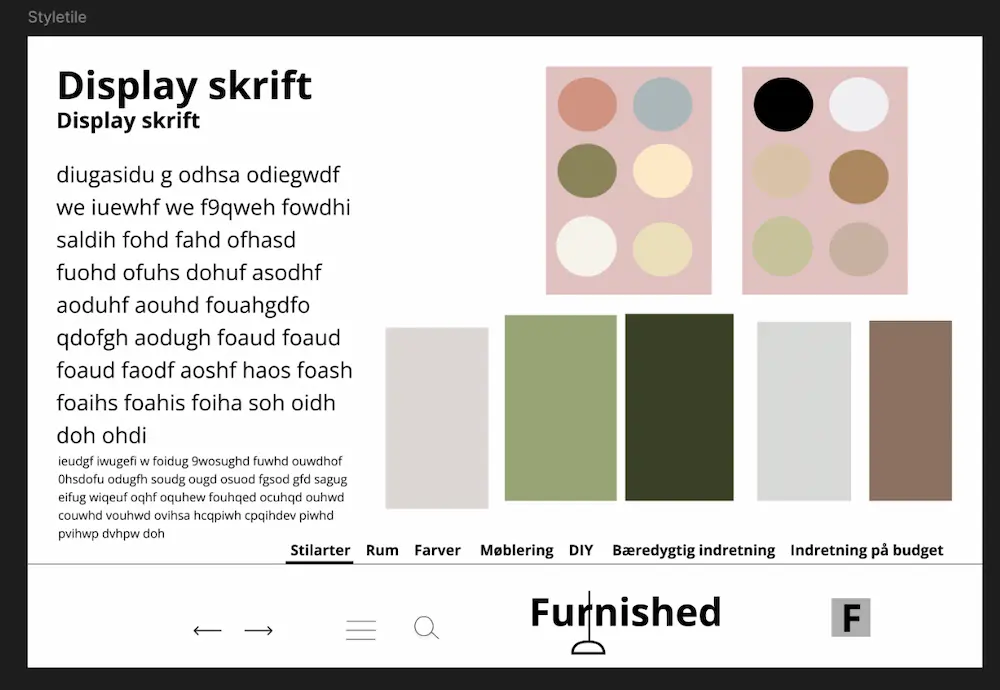

Grundlæggende UX/UI
Under Tema 3 arbejdede jeg med brugeroplevelser og digitale brugergrænseflader. Gennem forløbet fik jeg udvidet viden og færdigheder indenfor research, design og test i en design- og udviklingsproces. Den overordnede case var en emnesite, vi skulle designe, hvor jeg valgte at lave en inspirationsside til indretning. Gennem dette forløb lærte jeg yderligere, hvordan man præsenterer sin designproces, research- og testresultater for interessenter.

Idéudvikling
Ideudvikling var en af de processer, som jeg fik færdigheder indenfor under Tema 4. For at finde emner og underemner til min hjemmeside lavede jeg brainstorms i Figma, som det ses på billedet herunder.
Moodboards
Under arbejdet med ideudvikling fik jeg også evner indenfor at lave research. Her lavede jeg moodboards, hvor jeg samlede billeder, som havde den stil, der passede ind i det design, jeg ønskede. I forlængelse af moodboards arbejdede jeg også med værdiord, som jeg fik viden om under Tema 3. Mine værdiord var stilrent, enkelt og elegant, som det ses her.
Styletile
Efter at have fundet æstetisk inspiration ved brug af moodboards, lavede jeg et styletile, hvor jeg specificerede de forskellige elementer, der skulle indgå på min hjemmeside. Bl.a. lærte jeg, hvordan man via Figma kunne finde de farver og deres farvekoder, som var på mit moodboard. På mit styletile var også de fonte, jeg brugte, mit logo, mit favicon samt andre UI-elementer som pile og burgermenu-ikon.
Desk research
Jeg lavede også desk research, hvor jeg blev inspireret af andre lignende hjemmesider inden for samme emne. Her fokuserede jeg især på den overordnede æstetik, brugerflows og anvendte UI-elementer for at forbedre brugeroplevelsen. På billedet herunder kan du se de hjemmesider, jeg undersøgte.
Interview
En anden researchmetode, jeg brugte til mit emnesite, var et interview, hvor jeg brugte min mor som interviewperson. Ideen var at få indsigter og viden om en, der går op i møbler, og dermed få inspiration til indhold på siden. Gennem dette fik jeg evner indenfor interviewteknikker samt viden om, hvad man skal passe på med, som f.eks. ledende og lukkede spørgsmål. Herunder er de spørgsmål, jeg havde forberedt til interviewet.

Prototyping
Efter at have lavet ideudvikling og research til min emnesite, skulle jeg lave prototyping og test af idéen. Jeg lærte her, hvordan man i Figma laver lo-fi og hi-fi wireframes. Herunder ses det design, jeg lavede til forsiden, både i mobil- og desktopformat.
Test
Dernæst lavede jeg en digital prototype af min hjemmeside i Figma, hvor jeg fokuserede på et flow på tre sider. Nogle væsentlige ting, jeg fik færdigheder indenfor, var her at gøre prototypen klikbar og lave komponenter til UI-elementerne, så de kunne få hovereffekter. Efter at have fået min prototype klar, testede jeg den foran flere testpersoner. Denne proces lærte mig, hvordan jeg ved hjælp af 5-sekunders testen kunne finde ud af, om brugeren på få sekunder kunne opfange formålet med siden. Derudover lavede jeg tænkehøjt-test og fandt ud af, hvordan brugeroplevelsen var på min hjemmeside ved at stille testpersonerne en række navigationsopgaver. Herunder ses et billede af det flow, som var på min prototype.
Lighthouse test
Efter at have lavet min prototype, skulle jeg kode mit site i VS Code, hvor jeg arbejdede videre ud fra det, jeg havde lært under Tema 2. En ny ting, jeg dog lærte her, var at lave Lighthouse-test af min hjemmeside for at finde ud af, hvordan siden klarede sig på nettet. Her lærte jeg at bruge Squoosh til at ændre filformater og opløsning på billeder for at få en bedre ydeevne på mit site. Derudover lærte jeg, hvordan jeg kunne bruge “noindex”-tagget i min HTML til at få en lavere SEO-score.